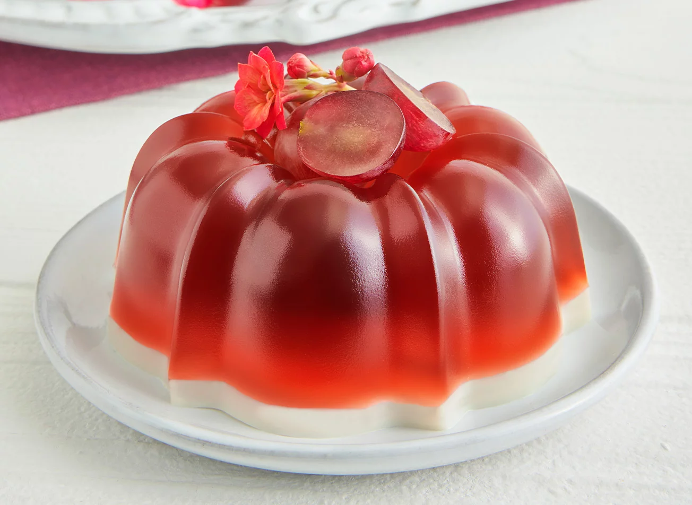

Gelatina de Jerez

Ingredientes
- 3 cucharadas de grenetina en polvo
- 1 taza de agua (240 ml)
- 2 tazas de jerez dulce (480 ml)
- 2/3 de azúcar (130 g)
Instrucciones
- Hidratar la grenetina.
- Hervir el jerez con el agua. Incorporar la grenetina y mover hasta que se funda. Vaciar la mezcla en los moldes disponibles y refrigerar hasta que cuajen las gelatinas.
- Desmoldar y servir
A continuacion dejo el link para visitar otras recetas: www.recetasnestle.com.mx/